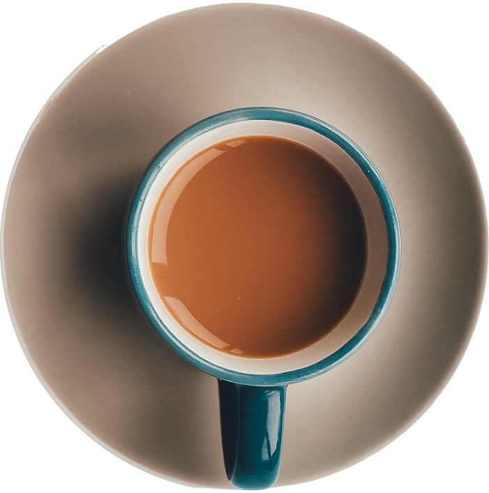

Was wir tun
Unsere Kaffeeraritäten entdecken
Wir finden, es wird wirklich Zeit. Zeit, die ganze Erfahrung unserer Kaffee-Experten über Rohwaren und Zubereitung
zu teilen und wirklich besondere Kaffeeraritäten anzubieten. Mit allem, was dazu gehört.

Lokal und Online
The Sipping Koi ist die Melitta-Plattform für Spezialitäten-Kaffees und deren Zubereitung. Du kannst erst in
einem unserer Coffeeshops probieren und dann online bestellen. Oder nur eines davon. Oder beides gleichzeitig.

Aufregendes Sortiment
Dank unserer Nähe zum Markt haben wir immer neue und spannende Kaffeesorten zum Kennenlernen.
Kaffeeexpertise erleben
In unseren Cofeeshops bekommst Du fachkundige Beratung von unseren erfahrenen Baristi. Und das was wir Dir
Online leider nicht bieten können: Noch mehr Kaffeeverrückte und den Duft frisch gemahlenen Kaffees.